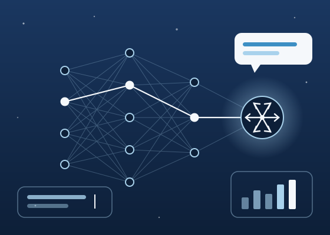

01
AI & machine learningAI・機械学習
Like snow, data becomes powerful when countless small pieces come together. We turn it into AI people can rely on in their daily work: assistants, agents and analytics designed around real needs. 雪と同じように、データも無数の小さなかけらが集まったとき大きな力になります。私たちはそれを、日々の仕事で頼れるAIへと変えます。実際のニーズを起点に設計したアシスタント、エージェント、分析基盤です。
- LLM applications & AI agentsAssistants that understand context, use tools, and complete multi-step tasks.
- LLMアプリケーション・AIエージェント文脈を理解し、ツールを使いこなし、複数の手順にわたる作業を遂行するアシスタント。
- Retrieval-augmented generation (RAG)Answers grounded in your own documents and data, with sources you can check.
- 検索拡張生成（RAG）自社の文書やデータに基づき、根拠を確認できる回答を生成。
- Machine learning & data analysisPrediction, classification, and recommendation models built on your data.
- 機械学習・データ分析お客さまのデータを活かした予測・分類・レコメンドモデル。
- Vision & languageImage recognition, OCR, and multilingual text understanding.
- 画像・言語処理画像認識、OCR、多言語テキストの理解。
- Python
- PyTorch
- LLM APIs
- RAG
- Vector search
- MLOps